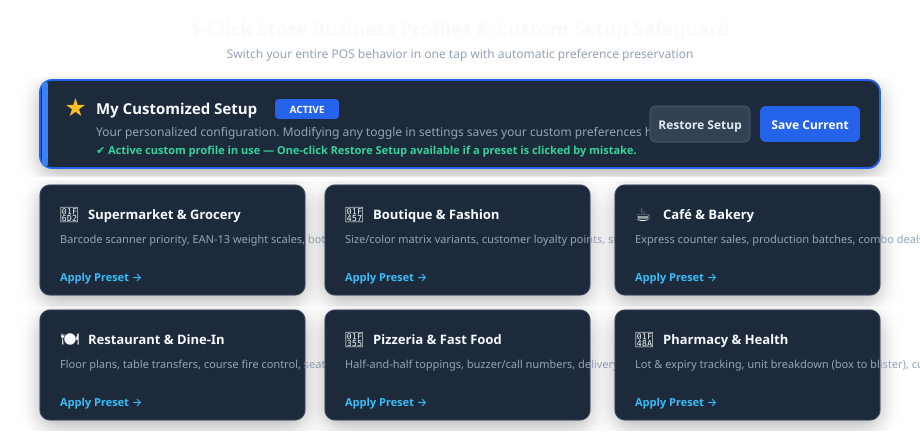
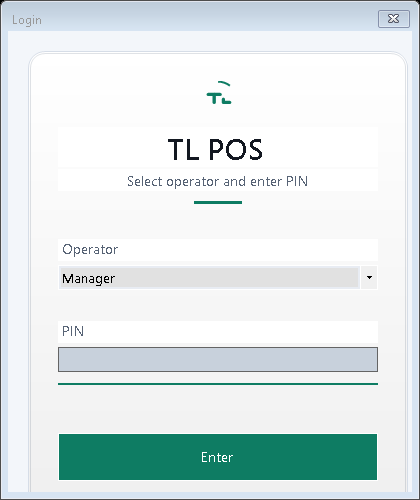
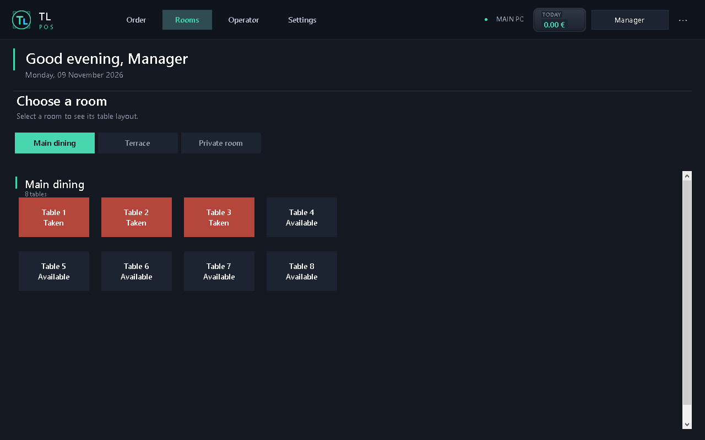

10. Data Backup, Maintenance & TroubleshootingPage 17
Audience for this Manual
This document is structured for store owners, IT administrators, cashiers, and third-party POS installers. Basic setup instructions appear first, followed by intermediate hardware settings and advanced network/remote VPN configuration.
01 System Overview & Architecture
TL POS is a high-performance, mission-critical Point of Sale suite designed specifically for demanding hospitality, retail, and food-service environments. The application is built around an ultra-reliable, offline-first philosophy: it operates with zero reliance on cloud connections, local SQL servers, or fragile database services.
The TL POS Ecosystem
Main Windows POS Terminal: The central powerhouse controlling billing, ticket generation, cash drawers, inventory, and end-of-day financial audit reports.
Android Waiter App: A high-productivity mobile companion built on .NET MAUI, allowing floor staff to take orders, customize dish modifiers, and fire tickets directly to the kitchen from tables.
Self-Ordering Kiosk Totem: A full-screen customer terminal supporting visual menus, automated ticket printing, and kiosk order queues.
Embedded Micro-Server (Port 8080): Built directly into the Windows POS, this high-throughput HTTP REST engine enables instant wireless sync with tablets without requiring IIS, Apache, or Docker.
Dual-Target Operating System Compatibility
Unlike standard web-based or Electron POS software that consumes gigabytes of memory, TL POS compiles into two specialized native native runtimes:
Operating System: Windows 7 SP1 with .NET 4.8, or Windows 10/11 (64-bit).
Step-by-Step Windows Installation
Acquire the Release Archive: Obtain the official ZIP package matching your operating system:
publish-win10-x64.zip for modern Windows 10/11 terminals.
publish-win7.zip for Windows 7 SP1 terminals.
Extract to Application Directory: Extract the contents to a permanent root folder, preferably C:\TLPOS\ or D:\TLPOS\. Avoid running directly inside temporary download directories.
Verify Prerequisites:
On Windows 7 SP1: Ensure Microsoft .NET Framework 4.8 is installed.
On Windows 10/11: The application ships as a self-contained runtime; no external .NET installation is required.
Run as Administrator (First Launch): Right-click the shortcut and select Run as administrator to allow Windows to register network listener permissions for the embedded mobile server.
Zero-Registry Portability
TL POS is 100% portable. It writes no entries into the Windows Registry. All configuration, product catalogs, customer balances, and sales archives reside strictly inside the client database\ subfolder. You can move the entire application simply by copying its folder to a USB drive!
03 Cryptographic Licensing & Activation
TL POS is secured by an industrial-grade Elliptic Curve Digital Signature Algorithm (ECDSA) engine. Each license is tied to the unique hardware signature of the POS motherboard and storage controller, guaranteeing copy protection without requiring continuous internet connectivity.
Upon launching the software for the first time on an unactivated terminal, the Product Activation dialog will appear automatically.
The dialog displays a unique 16-character Terminal Machine Code (e.g., VEC-9A4F-82B1-C34E).
Copy this code or take a photo and provide it to your TL POS distributor (or generate the key using your proprietary master generator tool).
The distributor will provide a cryptographic license file named license.dat.
Click Import License File and browse to the supplied license.dat, or drop the file directly into the client database\ directory.
The status badge immediately turns green (Activated — Lifetime License), unlocking all enterprise features.
04 1-Click Store Profiles & Custom Safeguard
Rather than requiring hours of manually toggling hundreds of settings, TL POS features an intelligent Business Profiles Engine. A single click transforms the user interface, order flow, receipt formatting, and feature set to match your specific industry.

Figure 4.1 — The 6 Preconfigured Business Models & Active Custom Safeguard
Lot numbers & expiry date tracking, blister unit breakdown (selling single blister from a box), customer insurance tabs.
Pharmacies, parapharmacies, optical shops, medical supply stores.
The Customized Setup Safeguard
Mistake-Proof Customization
Whenever you manually tweak any setting (such as changing a tax rate or enabling a loyalty toggle), TL POS automatically saves your entire configuration into the ★ My Customized Setup profile.
If an employee accidentally clicks on a preset profile (e.g., clicking "Boutique" by mistake), you can simply click Restore Setup at the top of the Profiles page to immediately restore all your personalized parameters!
05 Daily Cashier & Restaurant Operations
1. Operator Login & Cash Float Opening
At the start of each work shift, the cashier selects their name and inputs their 4-digit security PIN on the touch numeric keypad. If the Cash Drawer feature is active, the system prompts for the initial opening cash float (e.g., \$150.00 or 15,000 DZD).

Figure 5.1 — High-Security Operator Login Screen
2. Taking Orders in Table Mode (Dine-In)
Click on the Rooms / Tables tab in the navigation rail.
Select the dining area (e.g., Main Dining Room, Terrace, VIP Lounge).
Green tables indicate available tables; orange/red tables indicate active dining guests.
Tap an available table to open the order pad.
Tap category pills (e.g., Starters, Grills, Drinks) and tap product cards to add them to the ticket basket.
Use the Modifiers sheet to select cooking temperatures (Rare, Medium, Well-Done) or exclude ingredients (No Onions).
Tap Send to Kitchen: The order is instantly dispatched to kitchen thermal printers or the Kitchen Display Screen (KDS). The table turns orange on the floor plan.

Figure 5.2 — Interactive Dining Room Floor Plan & Table Status
3. Taking Orders in Express Counter Mode (Retail / Fast-Food)
In Express mode, the table map is bypassed. Scanning any barcode or tapping a product card opens a direct transaction. Cashiers can complete a transaction in under 3 seconds:
Scan item barcode → Press Pay → Enter cash received → Receipt prints automatically and the cash drawer kicks open.
4. Payment Methods & Split Billing
Split by Seat: Allows each customer at a table to pay only for the items they consumed.
Equal Split: Automatically divides the bill total equally among 2, 3, 4, or more guests.
Multi-Tender: Accepts combined payments (e.g., \$20 in Cash and \$35 via Credit Card on the same order).
5. End-of-Day Closing (X & Z Reports)
X-Report (Mid-day Audit): Provides a reading of current sales totals, cash in drawer, and payment breakdowns without resetting the shift registers.
Z-Report (End-of-Day Closure): Closes the business day, prints a tamper-evident financial audit slip, calculates cash discrepancies, and archives daily turnover to permanent financial history.
06 Hardware: Printers, Scales & Ticket Designer
1. Thermal Receipt Printers Configuration
TL POS supports direct hardware communication via Raw ESC/POS commands (via USB or network IP) as well as the standard Windows Print Driver system.
Printer Spooler Graceful Defense
If Windows Print Spooler service is stopped or a printer cable is unplugged, TL POS does not crash. It displays a clear diagnostic warning and logs the event without halting active sales.
2. Barcode Scales & Embedded EAN-13 Weighing
For butcher shops, produce sections, and delicatessens, TL POS features automatic parsing of EAN-13 weight-embedded barcodes (prefixes 20, 21, 22, 28, 29):
Cash Drawers: Connect via standard RJ11 cable directly to the thermal receipt printer. Configure the drawer kick pulse in Settings → Manage Printers (Standard Epson Pin 2 or Pin 5 pulse).
Barcode Scanners: All USB and Bluetooth HID scanners (Datalogic, Honeywell, Zebra, Inateck) work out-of-the-box with zero driver installation.
07 Android Mobile Waiter App Integration
The TL Waiter companion app turns any Android tablet or smartphone into an ultra-fast order terminal. Floor staff can take orders at the customer's table, submit orders to kitchen printers, and print check bills without ever walking back to the counter.
Ensure the Windows POS computer and Android tablets are connected to the same Wi-Fi router.
On the Windows POS, open Settings → Network / Tablet Connection.
A pairing QR code and local IP address (e.g., http://192.168.1.50:8080) will appear.
Launch the TL Waiter app on the Android tablet.
Tap Scan QR to Connect (or manually enter the POS IP address and the secure API key).
The tablet is paired instantly. All categories, products, prices, and room floor plans sync in real time!
08 Long-Distance Remote Access via Tailscale VPN
One of the most powerful enterprise capabilities of TL POS is secure, long-distance remote access. Using Tailscale, you can connect remote waiter tablets across different floors, outdoor terraces, separate buildings, food trucks, or allow restaurant owners to monitor live sales from home—without touching router firewall settings or buying expensive static public IP addresses.
Zero Port Forwarding: You never have to open ports on your restaurant router. Your network remains completely immune to internet scanners and hackers.
Bypasses 4G/5G CGNAT: Works seamlessly on mobile data SIM cards (where internet providers block incoming connections).
End-to-End Encryption: Powered by WireGuard® (state-of-the-art cryptography, ChaCha20/Poly1305 authentication).
Permanent 100.x.y.z Static IP: Tailscale assigns a permanent IP to each machine that never changes, even if you restart your router.
100% Free: Tailscale offers a generous free tier for up to 100 devices—more than enough for any restaurant or retail business.
Step 1: Installing Tailscale on the Main Windows POS Host
Visit tailscale.com and create a free account (using Google, Microsoft, or Apple login).
Download and install Tailscale for Windows on your main POS terminal.
Click the Tailscale tray icon and log in with your account.
Once connected, right-click the Tailscale tray icon and copy your terminal's unique 100.x.y.z IP address (e.g., 100.85.12.44).
Ensure the embedded micro-server is enabled in TL POS (Settings → Advanced Features → Enable REST API: YES).
Step 2: Connecting the Android Waiter Tablet Over 4G/5G or Remote Wi-Fi
Install the official Tailscale application from Google Play Store on the Android tablet.
Log into the exact same Tailscale account as the POS machine.
Tap Connect in the Tailscale app. The tablet is now securely joined to the encrypted mesh network.
Launch TL Waiter.
In the server connection field, enter the POS Tailscale IP:
http://100.85.12.44:8080
Enter your secure API key (found in Settings → Advanced → API Key).
Tap Connect. The tablet will immediately load all rooms and products! The waiter can now take orders from an outdoor beach terrace, rooftop lounge, or parking lot hundreds of meters away over 4G/5G.
Step 3: Remote Owner Live Dashboard (From Home or Mobile Phone)
Restaurant owners and store managers can check live sales turnover, active tables, and cashier balances from anywhere in the world on their smartphone or home laptop:
Install Tailscale on the owner's smartphone or home laptop and connect to the account.
Open Google Chrome, Safari, or Microsoft Edge.
Navigate to:
http://100.85.12.44:8080/reports
The live web dashboard displays real-time gross revenue, sales by category, current open orders, and cashier audit logs.
Multi-Branch Architecture
If you operate multiple branches or seasonal food trucks, each satellite location can run a local POS that transmits daily financial reports directly back to the headquarters PC over the Tailscale mesh!
09 Inventory, Recipes & Ingredient Tracking
TL POS provides full inventory control with automated recipe ingredient deductions.
1. Simple Stock Tracking
For retail and packaged goods (sodas, clothing, cosmetics), set the stock level directly on the product card. Each sale deducts 1 unit. Set low-stock alert thresholds (e.g., alert when stock < 5 units).
For food and beverage items, you can define composite recipes. When a dish is sold, the exact raw materials are subtracted from raw inventory:
Example: Pizza Margherita
Dough ball: 1 unit
Tomato sauce: 80 grams
Mozzarella cheese: 120 grams
Fresh basil: 3 leaves
Selling 10 Margherita pizzas automatically deducts 1.2 kg of mozzarella and 800 g of sauce from your stock warehouse!
10 Data Backup, Maintenance & Troubleshooting
1. Safe Data Backup in 10 Seconds
Because TL POS stores everything in lightweight, portable JSON archives, creating a backup requires zero database export commands:
Close TL POS.
Open the application directory (e.g., C:\TLPOS\).
Copy the entire client database\ folder to an external USB flash drive or secure cloud storage (Google Drive, OneDrive).
2. Moving TL POS to a New Computer
Copy the entire TLPOS\ folder to the new computer.
Launch TL POS.exe.
Because the hardware signature has changed, the activation dialog will appear.
Provide the new Machine Code to your distributor to generate an updated license.dat.
All your products, sales history, customer accounts, and settings are preserved intact!
3. Troubleshooting Common Issues
Symptom
Root Cause
Solution
"RPC Server Unavailable" when managing printers
Windows Print Spooler service was stopped or crashed.
Press Win + R, type services.msc, locate Print Spooler, right-click and select Start. TL POS includes defensive handling and will not crash.
Android Tablet cannot connect to POS
Windows Firewall is blocking port 8080 or IP address changed.
1. In Windows Defender Firewall, allow port 8080 incoming TCP. 2. Or simply use Tailscale (Section 08), which bypasses local firewalls automatically!
Cash drawer does not kick open
RJ11 cable connected to wrong port or incorrect pulse pin.
Verify the cable is plugged into the receipt printer RJ11 port (not the phone line). In Manage Printers, switch between Epson Pin 2 and Pin 5 pulse.
Barcode scanner adds extra digits
Scanner prefix/suffix setting.
Scan the reset barcode in your scanner manual to restore standard USB HID Keyboard wedge mode with CR/Enter suffix.
Technical Support & Distribution
For hardware inquiries, customized development, or bulk reseller licensing, contact your official representative: Author & Owner: Lounes Tinouche (TL) • Platform: TL POS Enterprise Suite